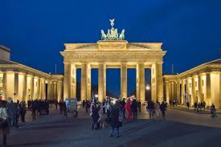

Explore Beautiful cities in Germany
Berlin, capital and chief urban centre of Germany. The city lies at the heart of the North German Plain, athwart an east-west commercial and geographic axis that helped make it the capital of the kingdom of Prussia and then, from 1871, of a unified Germany. Berlin’s former glory ended in 1945, but the city survived the destruction of World War II. It was rebuilt and came to show amazing economic and cultural growth.
Berlin is a world city of culture, politics, media and science. Its economy is based on high-tech firms and the service sector, encompassing a diverse range of creative industries, research facilities, media corporations and convention venues.Berlin serves as a continental hub for air and rail traffic and has a highly complex public transportation network. The metropolis is a popular tourist destination. Significant industries also include IT, pharmaceuticals, biomedical engineering, clean tech, biotechnology, construction and electronics.
